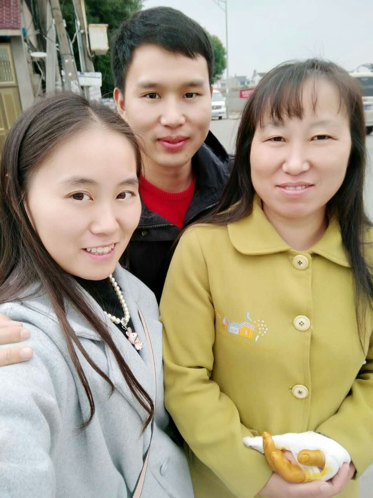
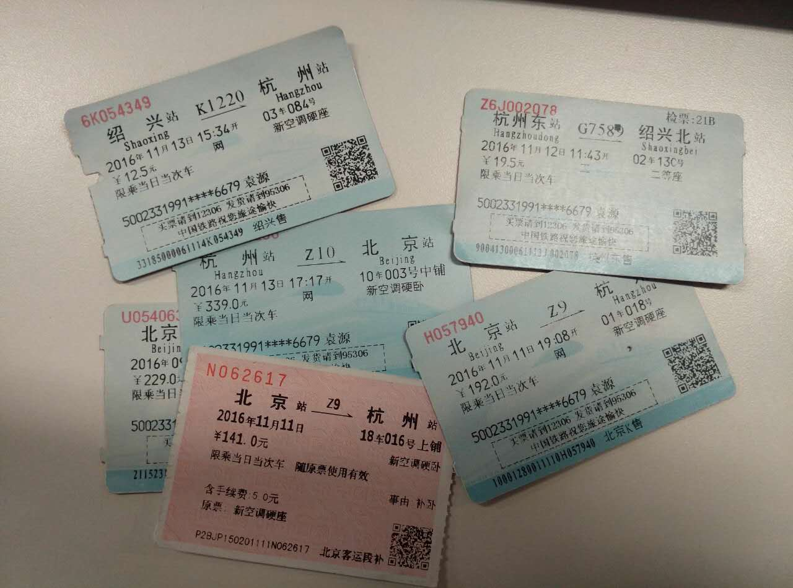
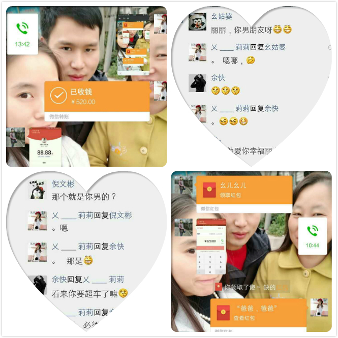
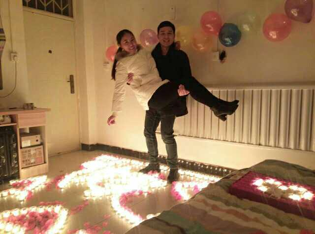
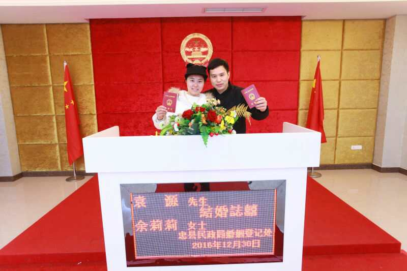
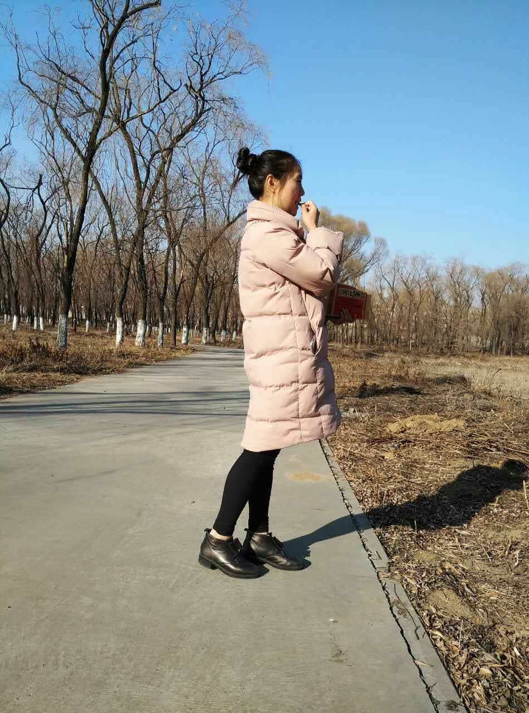

爱的时间轴
LOVE
正如你看到，之所以用这个页面来记录我们的点滴，不为别的
只想跟随时间去爱你
让时间记录我们爱的印迹
让时间留给我们爱的回忆
在这里，每一个字都倾注对你的爱在延续。。。
老版本.
盘古开天
- 伊始
-
一段伟大的浪漫而感人的爱情故事正在诞生！
2016年02月
- 大年初二（2月9日）
-
在你家院子，四目相对！
——我们的故事，由此展开。。。
- 噩耗传来（2月11日）
-
认识的第二天就电话约你去爬山，本来已经同意了。不知道什么原因又给我拒绝了，很彻底的拒绝，现在回想都心痛。乃至让我后面很长一段时间都想不通。
——你的心思我猜不透
2016年06月
- 再次联系（6月6日）
-
这就是所谓的缘分吧，被你拒绝的第四个月。莫名其妙的梦到你在梦中答应嫁给我。。哈哈，就是这么没逻辑。
——鼓起勇气再次通过微信问好
- 国庆节一起吃小面（6月6日）
-
我们第一次的约定，国庆节一起去重庆小面。当然可能你没当回事，我却记在心里了。
- 第一次跟你家亲人通话（6月9日）
-
奶奶的声音很慈祥，听到那她那句："小伙子，你也好啊！",我内心犹如万马奔腾，仿佛在告诉我，加油哟！奶奶看好你~~。不过话说你就不能提前跟我说一声让我也有个准备啊
——端午节的福利
- 给我介绍女朋友？（6月10日）
-

突然问我跟你朋友聊没?话说你本来就没有给我你朋友的QQ,是不是你要把你自己介绍给我啊，现在看来应该是了
- 来自新疆的哈密瓜（6月23日）
-
其实不是真从新疆发过来的，是朋友开网店要我照顾生意。刚好我又想到你，就让你尝尝。主要是想拍你马屁~^~，重点是你居然亲口说爱我了！！幸福指数爆棚
——被骗也不愿意醒来的幸福感

- 早起的动力（6月25日）
-
跟你约定了每天早上七点前向你问好，以表示我爱你的决心，并且改善自己睡懒觉的习惯。发现这个真的是个好方法呢，早上再也不会睡懒觉了，重点是还从来没有被你罚过钱呢!
2016年07月
- 不一样的备注（7月7日）
-
现在才发现你居然把我的微信好友名字改成傻缺，真够别样的。

- 第一次对我的关心（7月8日）
-

感动哭了~~~
- 一次说走就走的，见你（7月23日）
-
主要是那段时间太想你了，每天都想，坐卧都想。刚好你手机丢了，借这个理由非见你一次不可，以解我心头思恋之苦。

2016年08月
- 我们的第一个情人节（8月10日）
-
尽管第一个情人节没有陪你一起过，但还是值得回忆的。因为这才算是我们真正的开始。如果可以，以后的情人节都在一起。

- 感情的破裂（8月30日）
-
今天是8月30号，这是我们认识的第204天，相爱已经20天整。估计往后不在相爱了吧，因为她不会再信任我了。此刻心里面真的感觉堵得慌。感情的破裂有很多种，有因为物质的，也有因为家庭的，还有因为生活习惯和信仰的，而我们的感情的破裂却因为
——向家里说了我们恋爱的关系！
2016年09月
- 我们相识的地方（9月17日）
-
中秋之际看到你传给我的微信图片，图片中是你家附近，是我们第一次见面的地方。只是现在的景色比当时更美，树叶也更绿了。中秋本是阖家团聚的温馨的节日，而今你虽然回家了，我却在他乡。这让我更加思念你、更加想你。希望这是我们相识的地方，也是我们阖家团聚的地方！

2016年10月
- 国庆奉节（10月3日 - 10月6日）
-

期待已久的国庆节，总算如愿以偿地跟你在一起了！尽管只有短短两三天时间，但却无比的幸福！
在这之前我过得无比的煎熬，每天都很期待跟你见面。在这之后，浓烈的不舍情笼罩我整个内心。
就是这短短的两三天，我们做了很多一直想做却没机会做的事情：
一起吃小面
一起去旅行
一起去唱歌
一起去合影
一起见家长
一起布置新家
一起携手漫步。。。。。
总之是一段难忘的时光，已存我心，必将恒久！
- 置气（10月13日）
-

就在这一天晚上，我（余莉莉）乱七八糟乱说了些话，惹得神经病（袁源）无语加不高兴加生气！第二天跟我问好，咦，不理我（内心还是蛮伤心滴），心想给我等着你不理我我也不理你，看谁拗得过……哈哈……
- 一段意义深远的行程（10月30日 - 11月1日）
-

得知阿姨遭遇交通事故，我们都很着急。匆忙决定一同前往探望阿姨。不幸中的万幸，没有太大问题，需要的是时间来恢复。我们也就放心了些。
此行算是第一次正式见家长，只是没想到是在这种场景下见面。尽管如此，能得到阿姨、舅舅等亲人对我的认可，很感动、很开心、很满足。
因此，我萌生了结婚的想法。这里你肯定会问我为什么，我就列个12345678910出来：
1.你年轻，年轻就是资本，我们的未来有很长的路需要去经历，值得期待，值得向往。
2.你漂亮，就是这么让我白看不厌，越看越喜欢。
3.你阳光，充满活力，还有一双美丽的大眼睛。带给我温暖和幸福。
4.你直爽，上一秒有说有笑，下一秒就直接翻脸。让我内心70上80下，跟过山车似的。
5.你单纯，不是心机女，不是腹黑女。有时候傻傻的很可爱。
6.你重情，从不轻易选择，也不轻易放弃。值得相守一生。
7.你善良，从你对朋友、亲人的态度看出，即使有所不满也能为他人着想。
8.你孝顺，表面上你很大大咧咧，实际上你潜藏着一颗孝心。可谓百善孝为先。
9.你聪明，做事很有分寸，知道什么时候该做什么不该做什么。社会关系处理很到位。
10.你善变，时而豪爽，时而温柔，时而可爱，时而淘气，时而聪明，时而傻气，各种滋味耐人寻味。
我同样孝顺、善良、谦和、重情，也年轻，帅气，大方，更懂得包容，爱护和责任。
你虐我千百遍，我享乐其中，我真生气时，你又懂得收敛。这又何尝不是一种相爱的体现呢？
我们的感情是纯粹的，是浓厚的。没有不同的信仰，也没有不可调和的原则冲突。在一起时轻松快乐，分开时相思相守。
我们若结婚，不是为了冲动的结果而买单，只因相爱！
我们若结婚，定是一切美好的起步！
我们若结婚，注定相守一生！
2016年11月
- 千里之外与你相会（11月11日 - 11月13日）
-

距离上次见面已经过了10天，但这十天是真的就像过了10年一般。所以我决定再次远赴千里去看你，这次我选择了经济实惠的方式过去，辗转几次总算见到了。
感觉就像回家一样，妈妈、妹妹、还有伯伯都很热情，这种感觉真的很好。
最重要的是，我夺走了你的初吻！！！！尽管瞬间即逝，而且很生涩。却也回味无穷！
- 讨论结婚领证相关事宜（11月15日）
-
第二次跟爸爸通电话，但却依然无法叫出口喊爸爸。爸爸同意我俩的婚事，一切的事情都说好商量。让我真的很感动！
然后具体的细节在跟妈妈通电话后也基本已经确定。最近感觉自己整个人都飘起来了，太幸福，太高兴了。就像是梦境一样！
真的就要娶你为妻了，除了激动外我也衍生除了一种强烈的责任感。
2016年12月
- 第一次叫婆婆妈（12月07日）
-
就在这天下午的2点42分，准备已久的开口给婆婆妈叫妈，终于给叫出来了。
心里那叫一个激动啊（简直找不到词语来形容）……感觉全身细胞都在跳跃……让我在马路上是又蹦又跳……（哈哈）
［想对您说：“妈，我爱您！您辛苦了！”］
- 潜移默化的改变（12月12日）
-

双十一过去了，双十二又来了！
别人购物狂欢，我们也是自得其乐。没想到你居然偷偷给我买了一条皮带，想要给我惊喜。结果还是被我发现端倪。。哈哈
同样，我也带去了好消息。租到了合适的房子，算是为以后在一起做好了最基本的准备。。期待你的入住！
人逢喜事精神爽，一言不和。就忍不住让红包分了一会儿，哈哈。
一种被认可的感觉从此诞生了，主动给我买礼物，想要给我惊喜，为了我跟亲人翻脸，愿意将我们得事迹分享给亲友。
幸福满满，做什么都值
- 2017年是瑞年？(12月14日)
-
跟妈无意中电话聊天中得知2017年是瑞年，老家有很多人在传，说什么瑞年结婚不好。
其实当时我听了这话是没怎么在意的，毕竟我们年轻人不怎么在意这个。但是我还是把这个消息转达给你了。
嘿嘿，没想到你居然也觉得有点儿在意这事儿。让我觉得机会来了，可以加快进程啦，可以不用再煎熬太久啦！
于是我在一旁扇风点火、添油加醋、苦口婆心的表达了我的想法（提前回家领证！！！！！）。
简直了。。。。。奇迹般的速度，太神奇了。
事情居然进展的如此之快。。。。我都缓不过神来了----允许我歇歇，太激动了。
当天我就跟莉莉大体把这个事情协商了一下，接着就跟老丈人打电话沟通这个事情。没想到老丈人也是如此开明之人
都没见过我和我的父母的前提下，居然同意我们先行回家领证。。。。。。。
真是受宠若惊。我带着满心的激动，狂热，兴奋，欢快的心情（见谅我找不到好的形容词了，总之是无法形容的美好）确定着行程
同时又一路高歌，继续诱导。总算是把你骗到了我的贼船上了————让其改道跟我一同回家，哈哈!
嘘！这事儿仅有少数人知道，一般人我不告诉他。
哎，唯一美中不足的是我跟老丈人表述的方式有问题，把责任说到了莉莉身上。我很惭愧！
- 我在超市，你需要点儿啥？（12月17日）
-
这天是周六的早晨，早早的去体检完之后就溜近了一家超市给你买生活用品。
我记得很清楚，当时也没买几件，基本上都是你在线陪着我挑选商品的。
沐浴露，浴球，牙刷，水杯，毛巾，家居鞋，口罩，垃圾桶，垃圾袋，香皂盒，洗发露，等等。。
最难为情的两件事情：
1.我打算给你买姨妈巾的，结果转了几圈还是不知道哪种，搞的导购员都对我另眼相看了。
2.本想买点儿安全套，结果在偌大的超时转了好几圈，居然没找到在哪你卖，我又不好意思问。结果就。。。
东西不多，也装了满满一小袋子。这是我所有购物中最愉快的一次了，还是我一个人逛的。
因为里边都是你需要用到的物品，我真的很高兴，兴匆匆的就拎着回了家。
还记得你当时跟我说的话是："神经病，我突然觉得好尴尬啊","不好意思啊。。。","太不好意思了","我现在整个人都是飘起的"
- 新房子就要入住女主人啦!（12月23日）
-
经过一周的等待，你终于要在今天，从遥远的千里之外，来到我的身边！
你从高兴，害羞，尴尬，不好意思，飘起的各种状态转变到激动，期待，害怕，纠结，和默许的状态
我始终如一的等待，距离见面的时间越是逼近，我也越是激动。
晚上21点30，我手捧鲜花，满心期待，在北京南站等待你的到来。
本以为有一个大大的拥抱呢，结果小小失望下。
不过这很快就忘了，因为你的到来我真的很兴奋。
太晚了，我俩喝了碗粥，吃了点儿东西。然后。。。你就成了我的人啦，嘿嘿！
- 袁总向我求婚（12月25日）
-

按照计划本来不应该那么快回家领证的， 不过为了我们美好的未来，我应该做出这个伟大决定！
本来这个时间应该在老家， 却偷偷地跑到了北京。
就在今天和昨天，某人的某些小动作，如此聪明的我竟然没猜透，哈哈！
直到去叫朋友吃饭，门打开那一瞬间，我的眼睛看到了一直很的期待求婚（好惊喜）
我的心不由自主感动得流着喜泪（激动）
脸上充满幸福的味道（高兴）
然而一直口齿伶俐的那张嘴却说不出话来了。（尽管向我求婚的时候是一枚钥匙圈）
一亿个：我愿意！我爱你！
- 爱情得到了法律的保护（12月30日）
-

很多人说婚姻是爱情的坟墓，我却不敢苟同。
我认为我们两个人的感情正好相反，婚姻将是我们爱情长跑的开始。
为什么这么说呢？我们从认识到领证见面的次数屈指可数。
我们没有太多的相处时间，没有太多柴米油盐的日子，也没有太多深刻的经历。
即便是这样，我们还是领证了。没有强迫，没有委屈，没有不甘。
我想这是我们的选择，是我们对爱最切实有效的承诺。
这将意味着，在很短的时间内相爱，需要用很长很长的时间去相守！
这也是我们目前为止所经历的最折腾的一天，最辛苦的一天，最快乐的一天，最激动人心的一天。
当天凌晨1点到家（从北京回来），早上四点起床出发去忠县民政局（中途也是几经折腾，先去菜园坝车站路上因为司机临时变化加价，差点儿跟司机动手了。到了车站居然没车，辗转到龙头寺车站，因为人多又选择了坐了黑车，中途为了躲避交警还下车走了一段路。）
紧赶慢赶总算在中午12点的时候赶到了民政局。结果政府部门的大爷们都要下班了。
好说歹说,最后一哥们很不情愿的还是答应了。
我们先是拍照（照片丑），然后填写资料签名，然后拿到结婚证，最后是去宣誓！
2016年12月30日上午最后一对新人等结婚手续诞生）。
下午从忠县到丰都去拿东西，因为太晚没车，打车过去。晚上又从丰回家，到家已经又是第二个凌晨了。
我希望我们俩能一直一直一直做到，互相信任，相爱相守，不离不弃！欧耶！
2017年01月
- 经余董同意上北京视察工作（01月07日）
-

一大早起来正洗着衣服， 跟老公接着电话，向老爸请示了一哈我要去北京玩。
结果老爸爽快的答应了，我还以为他不同意呢…
我那老公呢， 当时听见了别提多高兴了，那叫一个激动（别不承认）！
赶紧的订票， 越快越好，生怕我反悔似的…… 哈哈。
就这样， 我就正大光明的踏上了去北京的行程！我内心也还是蛮高兴的。 嘿嘿！
亘古不变
- 更多的故事，就让我们一起续写吧
-

虽然我有些闷，有些过于理性，有些缺乏感情，但请永远不要怀疑我想和你在一起的真心，也请不要因为别人的三言两语就不开心甚至对我们的关系产生怀疑。让我们就这样牵着彼此的手，完全地信任对方爱护对方，一起好好度过这一生！
——我们生命里的每一天...